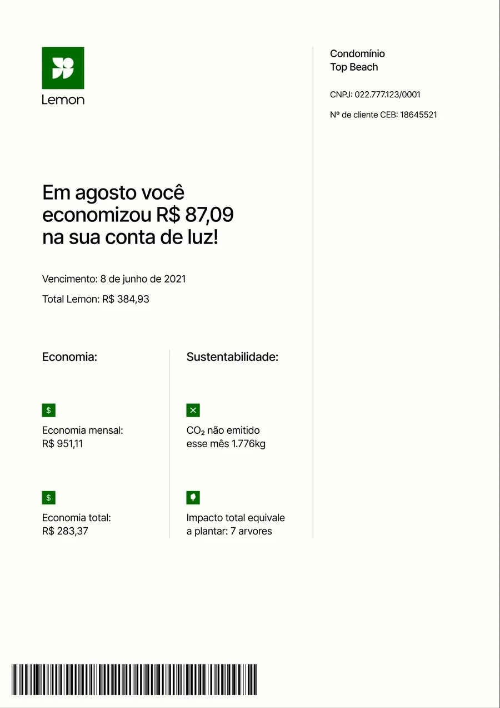
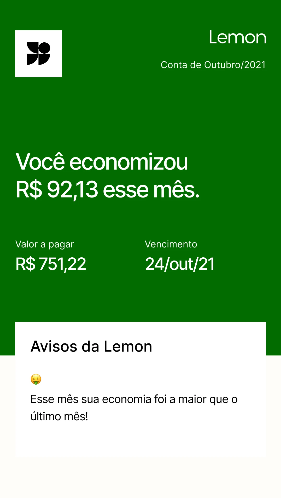
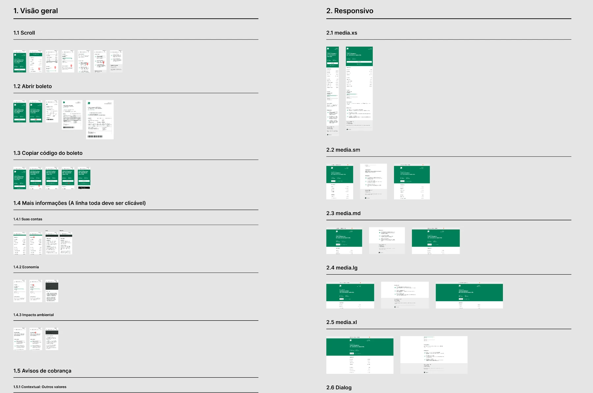

Digital Electricity Bill
Redesign the energy bill that users get every month.
Lemon helps small businesses choose where their energy comes from, accelerating their transition to sustainable energy. And it’s cheaper.
Problem
The bill was a paper-style PDF in several pages. These were the problems to solve:
- Poor mobile experience (.pdf)
- No usage metrics
- ~67% of CX tickets were related to service understanding
- Poor contextual comms

What customers told us
Interviews and desk research showed how customers really use the bill: once a month, to compare with the previous one, and they like being able to answer their own questions.
“I only pay attention to my consume when I receive my energy bill, once a month. And I keep track of it by comparing the cost with the previous month”
“I like having the option of answering my own question. I don’t have time to contact you everytime I have a question”
Designing the vision
I conducted multiple design reviews with designers and squad peers until we had a new solution. I also gathered feedback from the leadership, CX and Operations, and proposed that we validate with customers again.
The first proposed solution: a summary of how much you saved this month, the amount to pay and the due date, plus a card with notices from Lemon.


Delivery
I defined the MVP scope and designed all flows and scenarios, working with a copywriter, designers, product managers, engineers and more. We also went through a company rebrand and had to adapt everything we were doing.
I worked close to engineers to discover every scenario and agree on how to structure the file for handoff: an overview, responsive sizes, scenarios, loading states and edge cases.

The new bill
A green summary with how much the customer saved this month, the amount and due date, and buttons to open the bill or copy the barcode. Below it, the account in detail, the savings, the environmental impact and answers to common questions.
Rollout, results and learnings
The new bill was tested a lot in beta to make sure all calculations were right. We started in a production test with 10 customers, then 15%, 30% and so on.
To monitor results I built an Amplitude dashboard to keep track of usage, and connected Hotjar for real usage and heatmaps. The Data team built a dashboard for the payment impact. The chart only shows the overall trend, as weekly averages on a relative scale, with no exact numbers or dates.
To understand people’s perception, we also sent a survey a couple of days after they received the new format of the bill, and mapped some behaviour patterns of our customers to see which features should be prioritized, what worked out and what didn’t.
Customer survey
Sent a couple of days after customers received the new bill
- 83%of respondents found the new bill easy or super easy to navigate
- 92%of respondents said they had no questions after using it
- 4,3 / 5average satisfaction score